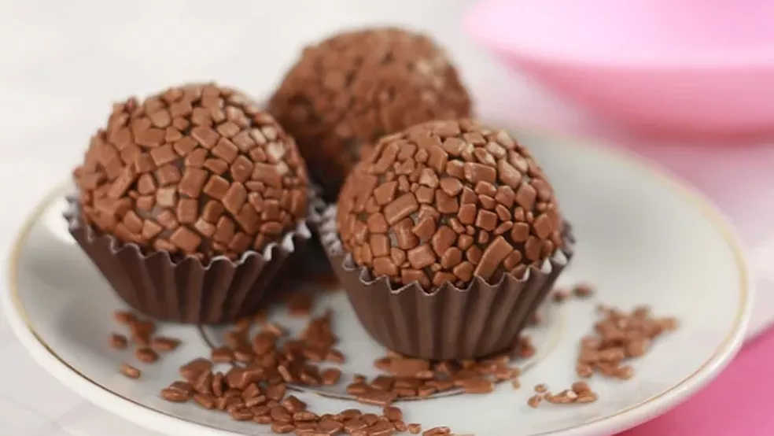

About Brigadeiro
Brigadeiro is a traditional Brazilian sweet that was created in the 1940s. It's made with condensed milk, cocoa powder, butter, and chocolate sprinkles. The name "brigadeiro" comes from Brigadier Eduardo Gomes, a Brazilian Air Force officer who was a candidate for the presidency in 1945.
Brigadeiro Recipe
- 1 can (14 oz) of sweetened condensed milk
- 3 tablespoons of unsweetened cocoa powder
- 2 tablespoons of unsalted butter
- Chocolate sprinkles for coating
1. In a medium saucepan, combine the condensed milk, cocoa powder, and butter. Cook over medium-low heat, stirring constantly, until the mixture thickens and starts to pull away from the sides of the pan (about 10-15 minutes).
2. Remove the pan from the heat and let the mixture cool to room temperature.
3. Roll the mixture into small balls (about 1 inch in diameter) and coat them with chocolate sprinkles.
4. Serve the brigadeiros at room temperature.
Nutrition Information
Each brigadeiro ball (about 1 inch in diameter) contains approximately:
- 85 calories
- 2 grams of fat
- 16 grams of carbohydrates
- 1 gram of protein